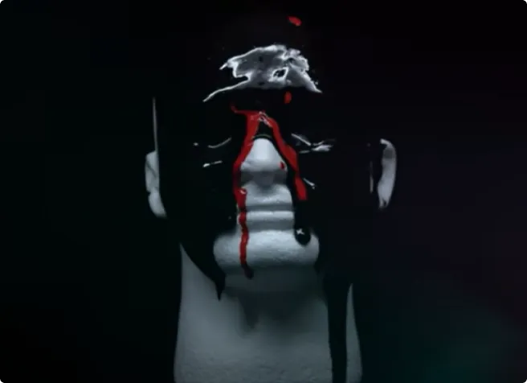
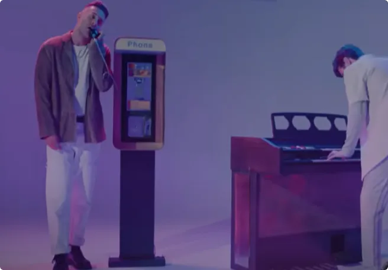

Head Up

"Head Up" - The Score
In July 2021, the song “Head Up” was written and composed by the band The Score. The first time I listened to it, I was going to the sea for the holidays.
It was a perfect and a funny situation when I think about it.
The lyrics of the music suggest keeping the head above the water, and not drowning. The song corresponds to me because I don’t know how to swim.
Why did I choose this song ?
For context, I was going back to my second year of my preparatory class in physics and chemistry after the summer holidays. I needed to be courageous, and strong mentaly.
This music has a catchy rhythm and I really like pop and (a little) rock songs. I really liked this one at the first listen.
Generally I like all of the songs produced by the group The Score because they are original and similar at the same time. We can recognize at the beginning of a song that it was composed by the band.
Personal Analysis
An extract of the lyrics :
As long as air's in my lungs
Blood's in my veins (veins)
I'm not going down this way
I gotta keep my head up, up, up, up
Up above the water, up above the water
This part of the lyrics suggests to keep the head above the water and don’t let it get to avoid drowning. It helps people to hold what is important to them and to follow their dreams.
The song is in 3 parts and the first one is a dark, deep and lonely part. The lyrics of the first part are personal due to the “I” that includes the person who listens. This person tries to have a place in society.
Lately, I've been feeling so alone
Can someone give the antidote
to me so I can
Finally understand where I belong?
The world outside to me
is like an ocean and I
This loneliness is emphasized by the comparison of the world to a deep ocean. In the video, this phase is symbolized by a black and red paint spilled on a bust. The head that goes out of the water seems to be submerged by dark thoughts.
In reality these dark thoughts are represented by the black paint. The red paint represents more blood and death.
In the second verse, we are drowning. A blue paint falls on the bust, we understand that the person concerned by the lyrics is underwater. The ocean that represents the world is deep. What happens if you hit the bottom? Is it possible to get back to the surface?
This is a phase of doubt where you can lose hope.
The person concerned by the lyrics hangs on and keeps hope. We can not guess it at first because the music finishes on the chorus which is sad.
At the third verse in the video it is a green paint and then a yellow paint that falls on the bust. Green symbolizes hope, we understand that nothing is impossible and we can continue.
I love this song because I recognize myself in the lyrics.
Who is The Score ?
The Score is a rock band composed of Eddie Anthony who is guitarist and singer and Edan Dover who is pianist and producer.
These last years they produced catchy music like Head Up. These songs give confidence to people who need it like Glory, Unstoppable, Stronger, The fear, Pressure, …
